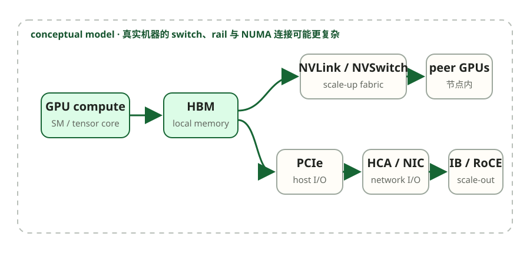

CS336 · 第 7 课
单张 GPU 会遇到两个上限：模型状态可能放不下，训练速度也可能不够。增加 GPU 之后，问题并不会自动消失——计算被拆开了，但不同设备必须交换参数、梯度或激活。本讲要建立的主线是：先看必须交换什么，再按通信频率和物理拓扑选择并行策略。
Spring 2026 官方来源：Lecture 7 trace · 课程日程
本页是中文学习导读；讲次主题、教师与材料版本以 Stanford 官方页面和讲义为准。
上一讲解决的是单张 GPU 内部的数据搬运：怎样通过 fusion、tiling 和更好的 kernel 减少 HBM traffic。模型扩展到多张 GPU 后，同一个问题跨越了设备边界：本地 memory traffic 变成了 network communication。
单卡是否能训练一个模型，不能只看参数量。梯度、优化器状态、激活、临时 buffer 和通信 workspace 都会占用显存；即使模型勉强放得下，单卡完成全部 FLOPs 也可能太慢。因此我们增加 GPU，但随之得到一个新问题：
多张 GPU 分别完成一部分计算后，需要交换哪些数据，交换多少次，又应该经过哪一类互联？
单卡容量或速度不足 → 多 GPU 引入通信 → collective 描述“交换什么” → cost model 核算“多少 bytes” → topology 决定“这些 bytes 走多快” → DP / FSDP / TP / PP 按通信模式映射到合适的硬件域。
并行不是“加卡自动加速”，而是选择复制、切分和通信哪些 tensors。Rank 是一个参与进程；collective 是所有 ranks 共同遵守的数据变换。先能画出每个 rank 操作前后的 tensor，才使用 All-Reduce 等名字。
DP: batch shards | full model replicas | synchronize gradients
FSDP: batch shards | model-state shards | gather/scatter states
TP: same tokens | tensor dimension shards | communicate layer partials
PP: microbatches | layer-range shards | send activations/gradients
logical tensor bytes → collective algorithm → physical links → wall timeGPU0 在样本 A 得梯度 \(g_A\)，GPU1 在样本 B 得 \(g_B\)。若两卡各自 update，下一步权重分叉；All-Reduce 得到 \(g_A+g_B\)，再除以 2（或按 loss reduction 约定缩放），两卡用同一 global-batch gradient 更新，权重继续一致。通信的是 gradient，不是“把两个完整模型合成一个更大模型”。
DDP 简单且计算局部，但每个 rank 保存完整 model states；一个模型若单卡放不下，加 8 张卡仍然每卡放不下。FSDP/TP/PP 通过 sharding 解决容量，却引入更频繁、shape 不同的通信。反例也说明 aggregate HBM 不是天然共享内存。
并行策略不是一组互不相关的名词。它们都在同一组资源之间做交换：可以复制计算、保留更多显存，或把数据放到另一张 GPU 后再通信。后文每介绍一种策略，都只问三件事：分片了什么、通信了什么、通信发生多频繁。
假设每张 GPU 都根据自己的 mini-batch 算出一份梯度。下一步不是“让 GPU 聊天”，而是一个具体的数据一致性问题：怎样让所有 GPU 获得聚合后的同一份梯度？分布式程序用 rank 标识一个参与者，用 world size 表示参与者总数，再用 collective 描述整组 rank 之间的数据变换。
| 操作 | 直觉 | 为什么现在需要它 |
|---|---|---|
| All-Reduce | 聚合每个 rank 的输入，并把完整结果交给所有 rank | DDP 需要所有副本得到一致梯度 |
| All-Gather | 收集每个 rank 持有的分片，让所有 rank 暂时看到完整张量 | FSDP 在计算前需要恢复当前参数组 |
| Reduce-Scatter | 先聚合，再把最终结果按 rank 分片 | FSDP 在反向后只保留各自负责的梯度分片 |
这三种操作并不是孤立 API。对带宽高效的 ring 实现，可以先让每个 rank 得到最终结果的一片，再交换这些分片：
\[\text{All-Reduce}=\text{Reduce-Scatter}+\text{All-Gather}\]
| 操作 | 输入 | 输出 | 典型用途 |
|---|---|---|---|
| Broadcast | 1 个 rank 有数据 | 所有 rank 有数据 | 一对多分发 |
| Scatter | 1 个 rank 有大张量 | 所有 rank 各有一片 | 分片分发 |
| Gather | 所有 rank 各有一片 | 1 个 rank 有完整张量 | 集中收集 |
| Reduce | 所有 rank 有数据 | 1 个 rank 有聚合结果 | sum / max 等聚合 |
| All-Gather | 所有 rank 各有一片 | 所有 rank 有完整张量 | 参数或 activation 收集 |
| Reduce-Scatter | 所有 rank 有数据 | 所有 rank 各有一片聚合结果 | 梯度聚合并分片 |
| All-Reduce | 所有 rank 有数据 | 所有 rank 有聚合结果 | 梯度同步 |
| All-to-All | 每个 rank 有发往各 rank 的分片 | 每个 rank 收到来自各 rank 的分片 | MoE token routing |
如果每个 rank 都把完整梯度直接发送给所有其他 rank，链路会重复搬运大量数据。Ring 的直觉是让 rank 只和邻居交换分片：第一阶段边传边聚合，第二阶段再传播已经聚合好的分片。这样每个 rank 搬运的总字节数与张量大小同阶，而不是随 GPU 数线性增加。
设 world size 为 \(N\)，输入张量大小为 \(S\) bytes。忽略启动延迟和协议开销：
这是逻辑字节成本，不是 wall-clock 时间；后者还取决于启动延迟、链路竞争、拓扑和 overlap。
到这里我们已经知道 collective 需要传输多少数据，但通信量只是逻辑成本。真正的 wall-clock 时间取决于这些 bytes 走的是节点内 scale-up fabric，还是经过 NIC 进入节点间 scale-out 网络。

| 层 | 职责 | 关键限制 |
|---|---|---|
| NVLink / NVSwitch | 节点内 GPU 直连与交换 fabric；B200 NVLink 5 的每 GPU 聚合带宽可达约 1.8 TB/s | 只覆盖有限的 scale-up domain |
| PCIe | GPU 连接 CPU 与 HCA/NIC 的主机 I/O 总线 | 链路代际、lane 数与拓扑会形成 oversubscription |
| HCA / NIC | 把 GPU/主机流量送入节点间网络 | NIC 数量、rail 绑定和 NUMA/PCIe 亲和性 |
| InfiniBand | 面向数据中心的低延迟、高带宽 fabric，原生支持 RDMA | 跨交换机跳数、拥塞与 rail 拓扑 |
| Ethernet + RoCE | 在融合以太网上承载 RDMA，绕开传统 TCP/CPU 数据路径 | 需要无损/拥塞控制工程，性能更依赖网络配置 |
| GPUDirect RDMA | 远端 NIC 直接读写 GPU memory，避免 CPU bounce buffer | 需要 GPU、NIC、驱动与拓扑共同支持 |
NCCL 的作用是把逻辑 collective 映射到实际硬件。它会探测节点、PCIe switch、NVLink/NVSwitch 与网络接口，再选择 ring/tree、分层 collective、channel 数和 GPU↔NIC 路径。
一阶时间模型可以写成：
\[T\approx L\alpha+\frac{B}{\beta_{\mathrm{effective}}}\]
其中 \(L\) 是需要串行完成的通信步骤，\(\alpha\) 是每步启动延迟，\(B\) 是字节数，\(\beta_{\mathrm{effective}}\) 是实际有效带宽。最慢链路、拓扑冲突、拥塞、协议效率和计算重叠都会改变它，因此相同的逻辑通信量不保证相同的运行时间。
现在把 collective 放回训练问题。最直接的扩展方式是让每张 GPU 保留同一个模型、处理不同样本；本地反向结束后，各 rank 的梯度必须重新一致，因此刚才的 All-Reduce 在这里第一次真正派上用场。
每个 GPU 持有完整模型，处理不同的数据片。梯度通过 all-reduce 同步。
# Data Parallelism 流程
for each GPU in parallel:
# 1. 获取不同的数据片
x_local = data[rank * batch_size : (rank+1) * batch_size]
# 2. 前向传播（本地计算）
loss = model(x_local)
# 3. 反向传播（计算本地梯度）
loss.backward()
# 4. 同步梯度（通信！）
all_reduce(gradients) # 所有 GPU 得到平均梯度
# 5. 更新参数（所有 GPU 同步更新）
optimizer.step()若梯度 payload 为 \(S\) bytes，\(N\)-rank ring All-Reduce 的每-rank 通信量约为 \(2(N-1)S/N\)。这说明 DDP 的主要通信量与参数数量同阶；实际时间仍需用有效 collective 带宽和实测 overlap 判断，不能直接除以某条链路的峰值带宽。
当目标 batch 无法一次放进单卡时，可以把它拆成多个 micro-batch，并只在最后一次 backward 触发梯度同步：
# DDP 示意：把一个大 batch 拆成多个 micro-batch
optimizer.zero_grad()
for micro_batch in micro_batches[:-1]:
with model.no_sync():
(model(micro_batch) / len(micro_batches)).backward()
# 最后一次 backward 不使用 no_sync()，触发 gradient bucket all-reduce
(model(micro_batches[-1]) / len(micro_batches)).backward()
optimizer.step()DDP 解决了吞吐扩展，却没有解决模型状态冗余：每个 rank 仍保存完整参数、梯度和优化器状态。若这些状态本身放不下，就需要进一步分片，这正是下一讲 FSDP / ZeRO 的主题。
| 策略 | 参数存储 | 通信 | 内存 |
|---|---|---|---|
| DDP | 每个 GPU 完整副本 | All-Reduce 梯度 | 高（冗余） |
| FSDP / ZeRO-3 | 参数按组分片，需要时 All-Gather | 前向/反向 All-Gather + 梯度 Reduce-Scatter | 模型状态可近似 1/N；激活与临时 buffer 另算 |
DP 让不同 GPU 处理不同样本，但每张 GPU 仍要独立完成整层计算。如果单层权重或中间激活太大，就必须把一次矩阵计算本身拆开；这会把通信从“每步一次梯度同步”推进到“几乎每个 Transformer block 都要交换 activation”。
把模型的宽度切分到多个 GPU——每个 GPU 只持有参数的一部分。
以 \(Y=XW\) 为例，按输出维切分 \(W\) 后，每个 rank 只计算一部分输出；按输入维切分时，每个 rank 得到部分和，随后需要 collective 合并。Megatron-LM 将两种切法配对，让部分中间结果尽量留在本地，只在 block 的关键边界通信。
关键代价：TP 的 activation collective 通常每层发生并位于关键路径，因此倾向部署在 NVLink/NVSwitch 等高带宽、低延迟的 scale-up domain。跨节点 TP 并非不可能，但是否划算取决于拓扑、消息大小和实现。
对于 Transformer 的 FFN 和 Attention，有特定的切分方式：
FFN / SwiGLU:
# W_gate 与 W_up 按输出维切分（column parallel）
# 每个 rank 保留自己的中间分片，先在本地做 Swish(gate) * up
# W_down 按输入维切分（row parallel），最后合并各 rank 的部分和
Attention 的切分:
# W_q, W_k, W_v 按 head 切分（每个 GPU 负责部分 head）
# W_o 按输入维切分，最后合并各 rank 的部分和
#
# 基础 Megatron TP 常用 All-Reduce 合并；配合 sequence parallel 时，
# 相邻区域可改用 Reduce-Scatter / All-Gather 组合。Transformer block 的 TP 通信:
1. Attention:
# - Q, K, V 计算: 无需通信（head 独立）
# - W_o: All-Reduce
2. FFN:
# - W_gate, W_up 和逐元素门控: 本地分片计算
# - W_down 后: All-Reduce（或 sequence-parallel 变体中的 Reduce-Scatter）
总计: 每个 block 2 次 All-Reduce假设 d_model = 4096, num_heads = 32
# 每 GPU: 8 个 head, d_model_per_gpu = 1024
# W_q: (4096, 4096) → 切成 4 份: 每 GPU (4096, 1024)
# W_k: (4096, 4096) → 切成 4 份: 每 GPU (4096, 1024)
# W_v: (4096, 4096) → 切成 4 份: 每 GPU (4096, 1024)
# W_o: (4096, 4096) → 切成 4 份: 每 GPU (1024, 4096)TP 在每层切宽度，因此通信频繁。另一种办法是让每张 GPU 持有一段连续层，只在 stage 边界交接 activation；通信更粗粒度，但不同 stage 可能互相等待，形成 pipeline bubble。
把模型的深度切分到多个 GPU——每个 GPU 持有连续的几层。
Pipeline Parallel: 4 GPU, 16 层
GPU 0: layers 0-3
GPU 1: layers 4-7
GPU 2: layers 8-11
GPU 3: layers 12-15
Input → GPU 0 → activations → GPU 1 → ... → GPU 3 → Output把 batch 拆成多个 micro-batch 后，不同 stage 可以同时处理不同 micro-batch。micro-batch 越多，越容易填满流水线；但调度、activation memory 和 stage balance 也更复杂。
朴素的 pipeline 有大量空闲时间——"bubble"：
朴素 pipeline (4 stages, 1 batch):
Time →
GPU 0: [====L0-3====] idle idle idle
GPU 1: idle [====L4-7====] idle idle
GPU 2: idle idle [====L8-11===] idle
GPU 3: idle idle idle [====L12-15==]
# 对理想化流水线，bubble time / useful compute ≈ (p-1) / m
# 若写成总时间占比，则约为 (p-1) / (m+p-1)
# p = pipeline stages, m = micro-batches
# 当 m >> p 时，bubble 可以忽略减少 bubble 的关键技术：
1F1B 在 warmup 后交替安排 forward 和 backward，而不是等所有 forward 结束后再统一 backward。它通常降低峰值 activation memory，但不会自动消除 warmup/drain bubble；效果仍取决于 stage 数、micro-batch 数、负载均衡和具体 schedule。
Pipeline Parallel 的通信:
每对相邻 GPU 之间传 activation；反向再传 activation gradient。
bf16 activation bytes = batch_size × seq_len × d_model × 2
# 例如: 一个 bf16 activation tensor，B=4, S=4096, D=8192
# = 4 × 4096 × 8192 × 2 bytes = 256 MiB
# 反向还要传 activation gradients；若叠加 TP/sequence sharding，张量大小会变化。
# P2P 通信可以与其他 micro-batch 的计算 overlap，但受 schedule 和依赖约束。TP vs PP 的选择：
实际中：常见做法是先按高带宽域选择 TP degree，再用 PP/FSDP 让模型装得下，最后用 DP 扩展吞吐；这只是经验起点，不是固定拓扑。
TP 已经切分矩阵乘法，却不一定切分 LayerNorm、Dropout 等逐 token 区域的 activation。为了让这部分显存也随并行度下降，需要继续沿序列维分片。
Tensor parallel 主要切分矩阵乘法的宽度维；LayerNorm、Dropout 等逐 token 区域仍可能复制 activation。Megatron 的 sequence parallel 用序列维分片这些区域，以继续降低 activation memory。
这不同于为超长上下文设计的 context parallel / ring attention；后者会分片 attention 所需的序列上下文，并引入另一组通信模式。
没有一种并行策略同时满足“最省显存、最少通信、没有 bubble”。真实集群通常先根据拓扑选择高频通信的局部并行度，再用其他维度扩展容量和吞吐。
常见分解同时使用 DP（不同数据）、TP（层内矩阵切分）、PP（层间切分），并让 SP 配合 TP 分片部分 activation：
\[N_{\mathrm{GPU}}=N_{\mathrm{DP}}\times N_{\mathrm{TP}}\times N_{\mathrm{PP}}\]
| 场景 | 推荐策略 | 原因 |
|---|---|---|
| 模型状态单卡可放下 | DDP / ZeRO-1 | 实现简单，主要同步梯度或优化器状态 |
| 模型状态需要分片 | FSDP / ZeRO-3 或 TP+PP | 在参数通信、activation 通信和 bubble 间权衡 |
| 高带宽节点内域 | 常用于 TP / EP | 这些策略的 collective 更频繁 |
| 超长上下文 | SP + context parallel 等 | 分别解决非 TP activation 与 attention context 分片 |
训练 70B 模型，16 节点 (128 GPU):
TP = 8 (节点内)
PP = 4 (4 个 stages)
DP = 128 / (8 × 4) = 4 (数据并行)
总计: 8 × 4 × 4 = 128 GPU
# 仅参数 shard（未考虑 embedding tie、负载不均等）:
# 70B / (TP 8 × PP 4) ≈ 2.19B 参数/GPU
#
# 但不能据此宣布“放得下”：梯度、master weights、Adam moments 是否再按 DP 分片，
# 以及 activation、temporary buffers、pipeline schedule 都会改变峰值内存。| 并行策略 | 通信类型 | 每步通信量 | 频率 |
|---|---|---|---|
| DDP | 梯度 All-Reduce | ring 每 rank 约 2(N-1)/N × gradient bytes | 通常每步，按 bucket 触发 |
| Tensor Parallel | 每 block 约 2 个 activation collectives | 与 micro-batch × sequence × hidden × dtype 及 TP degree 同阶 | 每层 |
| Pipeline Parallel | P2P activation / gradient | 每边界每 micro-batch 各传前向 activation 与反向 gradient | stage 边界 |
| FSDP / ZeRO-3 | 2× parameter All-Gather + gradient Reduce-Scatter | 若参数/梯度 payload 为 P bytes，大 N 下每 rank 约 3P | 每 FSDP unit |
统一视角：
每种策略都在"计算冗余 vs 内存节省 vs 通信开销"之间做权衡。
问题 1：Data Parallelism 每步的通信量是？
问题 2：Tensor Parallelism 的主要特点是什么？
问题 3：与先完成全部 forward 再 backward 相比，1F1B 的主要优势是什么？
问题 4：为什么 TP 通常优先用于节点内，而 PP 更常跨节点？
问题 5：Ring All-Reduce 常分解为哪两个 collective？
两卡从同一权重出发，分别得到 \(g_0=[2,4]\)、\(g_1=[6,0]\)，global loss 取样本均值。同步后每卡用于更新的 gradient 是什么？
答案：\((g_0+g_1)/2=[4,2]\)，两卡必须使用相同结果保持副本一致。
若直接拼成四维向量，你把“聚合同一参数的梯度”误解成了“拼接不同 batch 的数据”。
DDP 的梯度同步已清楚，但每卡状态复制仍是容量瓶颈；下一课逐项分片 optimizer、gradient 与 parameter，并追踪 FSDP 的峰值生命周期。